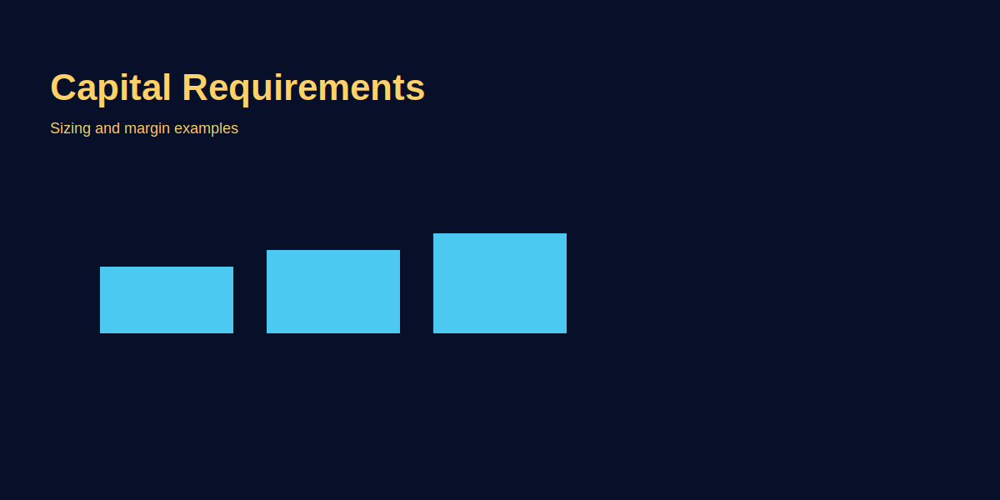

Forex Trading Capital Requirements
Problem-based introduction
Kitna capital chahiye start karne ke liye? Questions around starting capital are common. We'll explain realistic expectations, risk per trade, and GOLD examples to show how account size and risk percentage interact.
Kitna capital chahiye forex trading start karne ke liye?
Sabse common question: "Kitne paise se shuru karein?" Answer simple nahi hai—depends on strategy, risk tolerance, aur broker requirements. But reality check: $100 ya ₹5000 se shuru kar sakte technically, but yeh sustainable nahi. Over-leverage karna padega, one bad trade 30-50% account wipe kar dega. Realistic minimum for safe trading: $500-$1000 (₹40,000-₹80,000) for micro lot strategies, $2000-$5000 (₹1.6L-₹4L) for standard position sizing with proper risk management.
Capital requirement primarily determined hoti hai 3 factors se: (1) Risk per trade (0.5%-1% account), (2) Stop-loss size (pips/points), aur (3) Position size (lot size). Formula: Account Size = (Risk per Trade in $) ÷ (Risk % ÷ 100). Example: Agar tum $20 risk karna chahte per trade (1% rule), toh account chahiye $20 ÷ 0.01 = $2000. Isse kam me proper risk management possible nahi (forced high leverage).
Broker minimum vs realistic minimum: Bahut brokers "$10 se start karo" advertise karte—technically sahi, account open ho jata. But practical trading impossible: 0.01 lot (micro) GOLD trade me bhi $10 account me ek 10-pip stop = 100% risk. Yeh gambling hai, not trading. Realistic minimum broker minimum se 10-50x zyada hota—marketing vs reality ka gap.
Risk-Based Capital Calculation (Formula aur Examples)
Professional approach: Capital requirement ko risk management se reverse-engineer karo. Step-by-step:
Step 1: Risk % decide karo — Standard: 0.5%-1% per trade. Conservative: 0.5%, aggressive (experienced traders): 1-2%. Beginners ke liye 1% ideal. Yeh means agar account $2000 hai, max loss per trade $20 hona chahiye.
Step 2: Typical stop-loss size estimate karo — Depends on strategy. Scalpers: 5-10 pips, Day traders: 20-40 pips, Swing traders: 50-100 pips. GOLD pe: Scalp = 5-10 points ($5-$10 on 0.1 lot), Swing = 20-30 points ($20-$30 on 0.1 lot).
Step 3: Position size calculate karo — Formula: Position Size (lots) = Risk Amount ($) ÷ (Stop Loss in pips × Pip Value). GOLD example: Risk $20, Stop 20 points (200 pips), Pip value = $0.10 per pip for 0.01 lot → Position = $20 ÷ (200 × $0.10) = 1 lot (lekin yeh 1 standard lot hai, unrealistic for small account—adjust to 0.1 lot).
Step 4: Back-calculate account size — Agar position size 0.1 lot decide kiya (comfortable size), stop 20 points ($20 risk on 0.1 lot), aur 1% risk rule follow kar rahe, toh account = $20 ÷ 0.01 = $2000 minimum.
Practical Example 1 (Scalper):
- Strategy: GOLD scalping, 5-10 point targets, 5-point stop
- Risk per trade: 1% = $10 (on $1000 account)
- Position size: 0.1 lot (5 points = $5 risk, under $10 budget ✅)
- Account minimum: $1000
- Reality check: Scalping me slippage aur tight stops challenge hai—$1000 borderline tight. $1500-$2000 better.
Practical Example 2 (Swing Trader):
- Strategy: Daily timeframe GOLD swings, 30-point stops, 100-point targets
- Risk per trade: 1% = $30
- Position size: 0.1 lot (30 points = $30 risk ✅)
- Account minimum: $30 ÷ 0.01 = $3000
- Reality: Swing trades hold karne me psychological comfort chahiye—$3000-$5000 ideal.
Account Size vs Strategy: Comparison Table
| Account Size | Risk Per Trade (1%) | Position Size (GOLD 0.01 lot increments) | Typical Stop-Loss (Points) | Suitable Strategy | Reality Check |
|---|---|---|---|---|---|
| $100 (₹8,000) | $1 | 0.01 lot (10-point stop = $1) | 10 points max | None (too small) | ❌ High risk, gambling zone. One bad trade = 10-30% loss. |
| $500 (₹40,000) | $5 | 0.05 lot (10-point stop) | 10-15 points | Ultra-tight scalping | ⚠️ Possible but risky. Slippage aur tight stops challenge. |
| $1000 (₹80,000) | $10 | 0.1 lot (10-point stop) | 10-20 points | Scalping, tight day trading | ✅ Minimum viable for disciplined scalpers. |
| $2000 (₹1.6L) | $20 | 0.1 lot (20-point stop) | 20-40 points | Day trading, short swings | ✅ Comfortable for day traders. Recommended starting point. |
| $5000 (₹4L) | $50 | 0.1-0.3 lot (flexible) | 30-50 points | Swing trading, position trading | ✅ Ideal for swing traders. Room for multiple positions. |
| $10,000+ (₹8L+) | $100+ | 0.5-1 lot (scalable) | Flexible (50-100 points) | All strategies | ✅ Professional level. Diversification possible. |
Practical insight: $2000 (₹1.6L) sweet spot hai beginners ke liye—allows 0.1 lot GOLD trades with 20-30 point stops (1% risk), psychological comfort, aur room for 2-3 simultaneous positions agar multi-setup strategy hai. $500-$1000 se technically start ho sakta, but discipline extreme chahiye aur one bad streak account wipe kar sakta.
Leverage aur Capital: Double-Edged Sword
Leverage capital requirement ko artificially kam kar deta—but yeh trap hai. Example: $100 account with 1:500 leverage theoretically $50,000 worth positions control kar sakta. Sounds powerful, but reality: ek 20-pip adverse move 10-20% account wipe kar dega (high lot size due to leverage). Leverage position size ko badha sakta, lekin risk eliminate nahi karta—ulta amplify karta hai.
Leverage ka sahi use: Low leverage (1:10 to 1:50) use karo proper position sizing ke liye, not to over-trade. Example: $2000 account, 1:20 leverage = $40,000 buying power. 0.1 lot GOLD trade (roughly $26,000 exposure) easily handle ho jata without maxing out margin. Agar 1:500 leverage ho, toh temptation hoti 1-2 lot trade karne ki—yeh suicide hai.
Regulated brokers (SEBI, FCA, ASIC): Max leverage 1:30 to 1:50 retail traders ke liye (protective measure). Offshore brokers 1:500 to 1:3000 offer karte—red flag for beginners. High leverage = high risk, broker ko benefit (more trades, more commissions). Professional traders actually low leverage prefer karte (1:5 to 1:20)—capital heavy, but control zyada.
₹10,000 vs ₹1 Lakh: Real Scenario Comparison
Indian context me common question: "₹10,000 se start karein ya ₹1 lakh save karein?" Yeh detailed comparison real outcomes dikhata hai.
Scenario A: ₹10,000 ($120) Account
- Risk per trade (1%): ₹100 ($1.20)
- Position size: 0.01 lot GOLD (10-point stop = $1)
- Challenge: 10-point stop bahut tight—noise me stop hit hoga. Realistic stop 20-30 points me 2-3% risk ban jata (rule violation).
- Psychological: Har trade "make or break" feel hota—₹500 loss (5% account) devastating lagta. Emotional decisions increase.
- Outcome (6 months): High probability blowup—2-3 bad trades consecutive 30-50% account wipe. Recovery impossible. Survival rate: 10-20%.
Scenario B: ₹1 Lakh ($1200) Account
- Risk per trade (1%): ₹1000 ($12)
- Position size: 0.1 lot GOLD (12-point stop = $12), ya 0.05 lot with 24-point stop (flexibility).
- Advantage: Realistic stops use kar sakte (20-30 points) without over-risking. 5-10 consecutive losses bhi account ko 5-10% hi down karenge (recoverable).
- Psychological: ₹1000 loss per trade manageable lagta (1% account). Decisions rational rehte, not panic-driven.
- Outcome (6 months): Agar strategy edge hai (50%+ win-rate, 1:2 RR), toh account ₹1.1-₹1.3L tak grow ho sakta. Agar losses hain, still ₹80-90k survive karega (not blowup). Survival rate: 60-70%.
Conclusion: ₹1 Lakh starting capital 10x better nahi, 100x better survival odds deta hai. Agar ₹1L nahi hai, toh 6-12 months save karo aur tab start karo—yeh waiting period demo practice aur psychology building me use karo.
Capital Growth Strategy: Compounding vs Withdrawals
Capital requirement sirf starting point nahi—growth plan bhi chahiye. 2 approaches:
1. Full Compounding (Aggressive Growth): Sab profits account me rehne do, position size progressively badhao. Example: $2000 account, 5% monthly gain = $2100 next month. Next month 5% on $2100 = $2205. 12 months me 80%+ growth (compounding effect). Risk: Ek bad streak growth wipe kar dega. Best for: Traders with proven edge (6+ months consistent) aur separate income source.
2. Partial Withdrawals (Sustainable): Monthly profits ka 50% withdraw karo, 50% compound. Example: $2000 account, $200 profit (10%) = withdraw $100, compound $100. Account slow grow karta ($2100 next month), but income stream bhi. Psychological benefit: Regular withdrawals confidence build karte. Best for: Part-time traders ya beginners (income pressure kam).
Realistic growth timeline: Professional expectation 5-15% monthly (not guaranteed). $2000 account, 10% average monthly = $200 profit. 12 months compounding = ~$6300 account (3x growth). Yeh realistic hai—100% monthly ya "double in 3 months" claims scam hain. Sustainable edge slow aur steady hota.
Psychological Capital: Hidden Requirement
Capital requirement sirf dollar amount nahi—psychological capital bhi chahiye. Psychological capital = ability to absorb losses without emotional breakdown. Example: Agar $500 loss tumhare liye devastating hai (rent/bills affect hoga), toh tumhara psychological capital insufficient hai—chahe trading account $5000 ho. Rule: Sirf woh capital trade karo jo "lose kar sakte ho" comfortably (3-6 months expenses cover hain separately).
Common mistake: Savings/emergency fund trading me laga dete—pressure me bad decisions lete ("is month profit chahiye rent ke liye"). Yeh desperation trading hai, not strategy execution. Result: Overtrading, revenge trading, rule violations—account blowup.
Practical: Agar tumhare paas ₹5 Lakh savings hain but ₹3L emergency fund maintain karna zaroori (6 months expenses), toh trading me sirf ₹2L lagao. Yeh "risk capital" hona chahiye—agar lost ho jaye (worst case), life normal chalta rahe. Yeh psychological cushion better decisions enable karta.
Image-based examples (mandatory)
Common Mistakes
- $100 se shuru karna with unrealistic expectations: "Small start, big dreams"—reality me high leverage force hoti, ek-do bad trades account wipe.
- Leverage ko capital substitute samajhna: "1:500 leverage hai toh $100 me bhi trade kar lunga"—leverage risk amplify karta, capital replace nahi karta.
- Emergency funds trading me lagana: Rent/bills money risk karte ho—pressure me bad decisions, emotional trading, blowup inevitable.
- Capital size ko edge samajhna: "₹5L account hai toh profit pakka"—capital management important hai but strategy edge nahi. Bina edge ke large account bhi blow hota.
- Growth targets unrealistic rakhna: "1 month me double karunga"—greed-driven overtrading karte, risk management violate, losses multiply.
- Broker minimum = realistic minimum: "$10 se shuru karo" ads dekh kar $50 account kholte—technically possible but practically gambling.
Pro Tips
- 3-6 months emergency fund pehle: Trading start karne se pehle 3-6 months living expenses save rakho separately. Yeh psychological pressure remove karta.
- Risk capital define karo: Jo amount "lose ho sakta comfortable" usko trading me lagao. Agar $500 loss devastating hai, toh capital insufficient.
- Demo se live transition realistic timing: Agar demo me 3-6 months consistency hai, tab $1000-$2000 se live start karo. Rushed transition = capital waste.
- Position size fixed rakho initially: Starting 3-6 months constant 0.1 lot (ya tumhare account ke liye optimal size) use karo—compounding later me introduce karo jab edge proven ho.
- Monthly profit targets % me: "₹10,000 monthly" target mat rakho—"5-10% account growth" rakho. Yeh scalable aur realistic hai.
- Backup income maintain karo: Full-time trading me jump mat maro jab tak 12-24 months consistent nahi. Part-time se shuru, income pressure avoid.
Risk Warning
Trading requires capital and discipline; do not risk funds needed for essentials. This is educational content, not financial advice.
SEO FAQs
- 1. Forex trading ke liye minimum capital kitna chahiye?
- Technically $50-$100 se shuru ho sakta (broker allow karta), but realistic minimum $500-$1000 (₹40K-₹80K) for micro lot scalping, $2000-$5000 (₹1.6L-₹4L) for comfortable day/swing trading with proper risk management (1% risk rule).
- 2. ₹10,000 se trading start kar sakte hain?
- Technically yes, but highly risky. 0.01 lot GOLD me bhi 10-point stop = ₹100 (1% risk), lekin realistic stops 20-30 points hote—2-3% risk force hota. Survival rate low (10-20% 6 months me). Better: ₹50K-₹1L save karo pehle.
- 3. Leverage se kam capital me trading possible?
- Leverage position size enable karta but risk multiply karta. 1:500 leverage $100 account ko $50K control deta theoretically, lekin ek 20-pip move 10-20% wipe kar dega. Leverage capital substitute nahi, risk amplifier hai. Low leverage (1:10-1:50) safe.
- 4. GOLD trading ke liye kitna capital ideal?
- Scalpers: $1000-$2000 (0.1 lot, 10-15 point stops). Day traders: $2000-$3000 (0.1-0.2 lot, 20-30 point stops). Swing traders: $3000-$5000+ (0.1-0.3 lot, 30-50 point stops, multiple positions).
- 5. Account size aur position size ka relation?
- Formula: Position Size = (Account × Risk %) ÷ (Stop Loss in $ per lot). Example: $2000 account, 1% risk ($20), 20-point stop on 0.1 lot GOLD ($20) = 0.1 lot max. Account badhe toh position size proportionally increase.
- 6. Capital grow karne ka realistic timeline?
- Professional traders 5-15% monthly target karte (not guaranteed). $2000 account, 10% monthly compounding = $6300 in 12 months (3x growth). "Double in 3 months" claims unrealistic/scam. Slow aur steady sustainable.
- 7. Emergency funds aur trading capital separate kyun rakhe?
- Psychological pressure avoid karne ke liye. Agar rent/bills money risk me hai, toh desperation trading hota—bad decisions, overtrading, emotional. Rule: 3-6 months expenses separately save, phir trading capital allocate.
- 8. Kitne trades lene chahiye monthly limited capital me?
- Quality > quantity. $1000 account me 5-10 high-probability setups (1% risk each) better than 30-40 random trades. Overtrading small accounts ko fast drain karta (commissions + slippage).